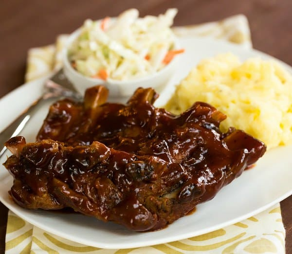

Slow-Cooker Barbecue Ribs

An easy and delicious way to prepare tender barbecued ribs without the barbecue!
If you love ribs, this Slow Cooker BBQ Baby Back Ribs recipe is for you!
They are so flavorful and SO incredibly tender. It’s insane.
Ingredients
- 4 pounds pork baby back ribs
- salt and pepper to taste
- 2 cups ketchup
- 1 cup chili sauce
- ½ cup packed brown sugar
- 4 tablespoons vinegar
- 2 teaspoons dried oregano
- 2 teaspoons Worcestershire sauce
- 1 dash hot sauce
Directions
- Preheat oven to 400 degrees F (200 degrees C).
- Season ribs with salt and pepper. Place in a shallow baking pan. Brown in oven 15 minutes. Turn over, and brown another 15 minutes; drain fat.
- In a medium bowl, mix together the ketchup, chili sauce, brown sugar, vinegar, oregano, Worcestershire sauce, hot sauce, and salt and pepper.
Place ribs in slow cooker. Pour sauce over ribs, and turn to coat.
- Cover, and cook on Low 6 to 8 hours, or until ribs are tender.